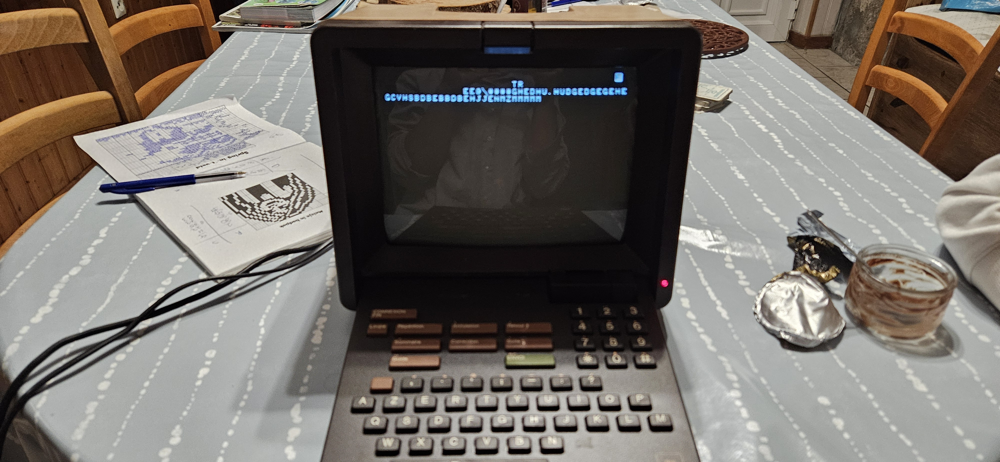

On a vacation in France, I saw a secondhand MiniTel on a flea market. Even though it is not nostalgic for me, I was still interested in buying it.
Testing it at home, the screen turned on, however you could not do enything apart from just typing. Armed with my knowledge of old tech, I figured there should be a way to interface with it.
Online i found that the serial port at the back was perfect for this. After hooking up a esp32 with some cables, I could begin sending messages to the minitel. And they showed up in the screen!
A few lines of code later I had connected my todo list on Trello to it, it would sync every few seconds, showing you live todo list on a device older than the internet itself!!
